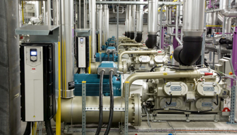
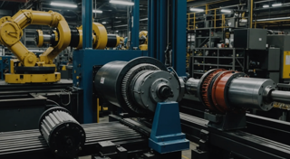
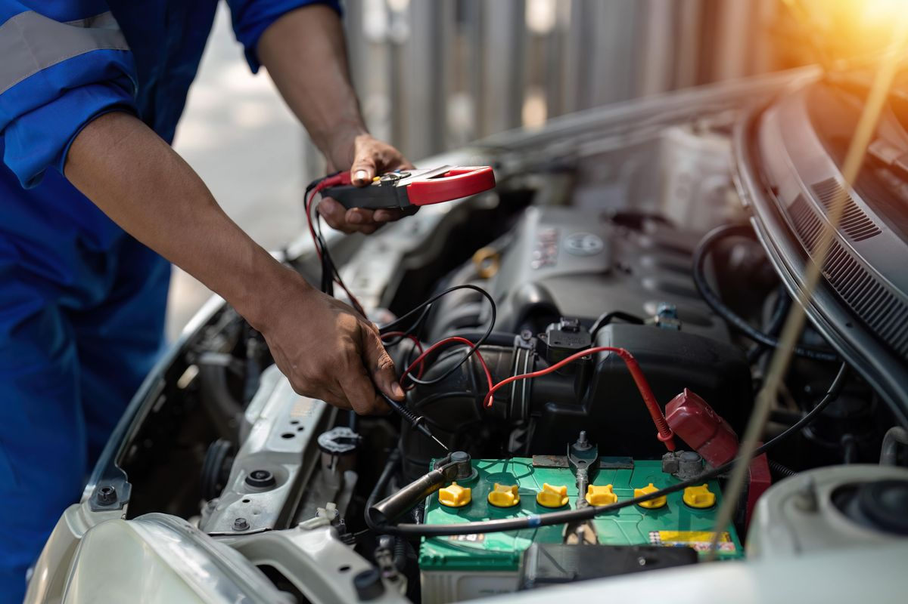
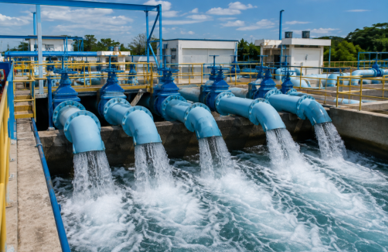

Soluciones en Electromecánica Industrial
Somos especialistas en bobinado, mantenimiento y diagnóstico de motores eléctricos, aplicando ingeniería, electromagnetismo y análisis de sus condiciones de operación para recuperar, adaptar y optimizar su funcionamiento de manera confiable y eficiente.
EXPERIENCIA
Más de 20 años
ÁREA DE COBERTURA
Tlaxcala y Puebla
SERVICIO
Industrial y Comercial
NUESTRO ENFOQUE
Ingeniería aplicada al comportamiento electromagnético de las máquinas eléctricas
No nos limitamos a reparar motores: analizamos su comportamiento como sistemas eléctricos y electromagnéticos.
NUESTROS SERVICIOS
Somos especialistas en electromecánica industrial, ofreciendo soluciones técnicas confiables y eficientes respaldadas por principios eléctricos, matemáticos e ingeniería.
01
Futuro servicio
Futuro servicio
Futuro servicio
Bobinado
Restauración y reparación de devanados de motores eléctricos.
Ver servicio → 02Conversión de motores
Adaptación de motores a las condiciones eléctricas y operativas requeridas.
Ver servicio → 03Diagnóstico de fallas (Troubleshooting)
Identificación de fallas y sus causas en equipos electromecánicos.
Ver servicio → 04Control y automatización de motores
Soluciones de control, arranque y protección para motores.
Ver servicio → 05Mantenimiento preventivo
Inspección y mantenimiento para conservar la confiabilidad de los equipos.
Ver servicio → 06Mantenimiento predictivo
Monitoreo de condición para detectar anomalías y anticipar fallas.
Ver servicio → 07Bobinado y mantenimiento de transformadores de baja y media tensión
Diagnóstico, mantenimiento y restauración de transformadores.
Ver servicio →Instalaciones eléctricas industriales
Control y automatización industrial
Aprende con nosotros
Los motores de corriente alterna se utilizan en una gran variedad de aplicaciones industriales, comerciales y domésticas. Haz clic en una tarjeta para conocer sus características y aplicaciones.
INDUSTRIAS QUE ATENDEMOS
Atendemos industrias y servicios municipales con soluciones electromecánicas adaptadas a cada proceso.

Industria Alimentaria
Soluciones electromecánicas para equipos y procesos de la industria alimentaria.

Industria Refractaria
Servicios especializados para equipos y maquinaria utilizados en la fabricación de materiales refractarios.

Industria Automotriz
Mantenimiento y soluciones electromecánicas para maquinaria y procesos de la industria automotriz.

Ayuntamientos Municipales
Atención a equipos electromecánicos utilizados en infraestructura y servicios municipales.
Industria Textil
Soluciones para motores y equipos electromecánicos empleados en procesos de producción textil.
CONÓZCANOS
Visite Nuestras instalaciones
Conozca nuestras instalaciones y el espacio donde realizamos nuestros trabajos de reparación, mantenimiento y soluciones electromecánicas.
Experiencia y precisión en cada trabajo
Contamos con un espacio especializado para realizar trabajos de diagnóstico, reparación, mantenimiento y reconstrucción de equipos electromecánicos.
UBICACIÓN
Calle Portales No. 17, Sección 3ra, San Luis Teolocholco, Tlaxcala
TELÉFONO
246 240 87 85
HORARIO DE ATENCIÓN
Lunes a viernes (8 a.m. - 6 p.m.)
Sabados (8 a.m. - 1 p.m.)
CONTACTO DIRECTO
¿Listo para iniciar su proyecto?
Póngase en contacto con nosotros para solicitar información, cotizaciones o asesoría sobre nuestros servicios electromecánicos.
Enviar Mensaje
Complete la siguiente información y nos pondremos en contacto con usted.
Estamos enviando tu solicitud
Esto puede tomar hasta un minuto.
Por favor, no cierres esta ventana.